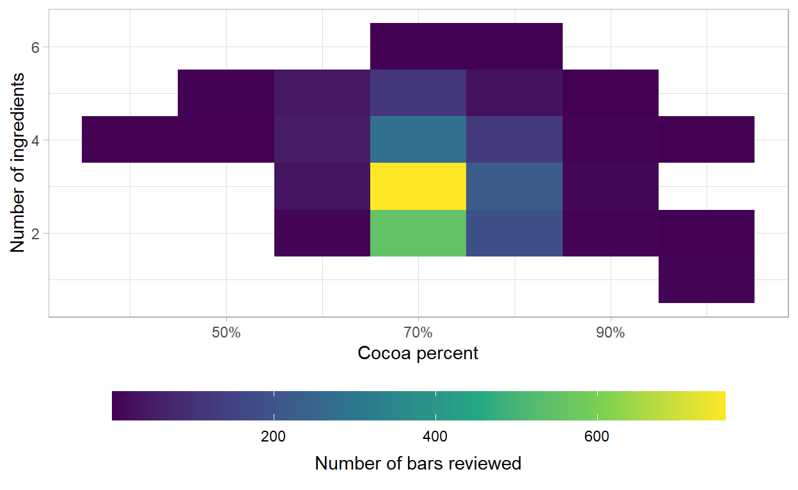
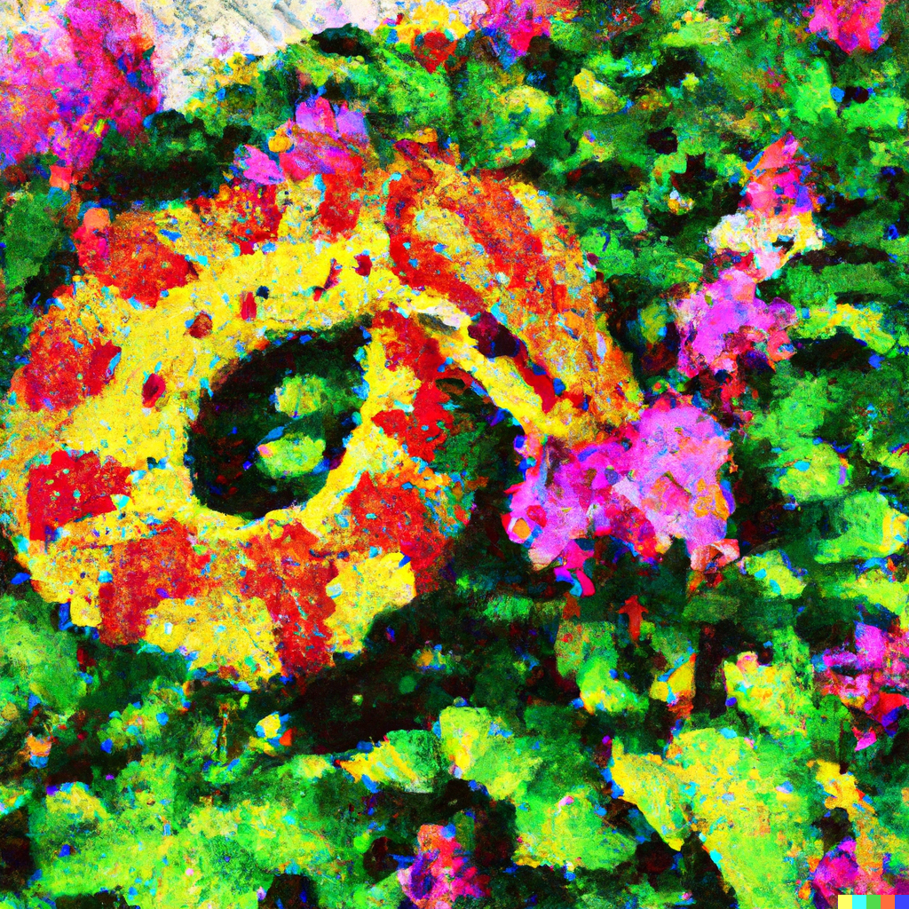
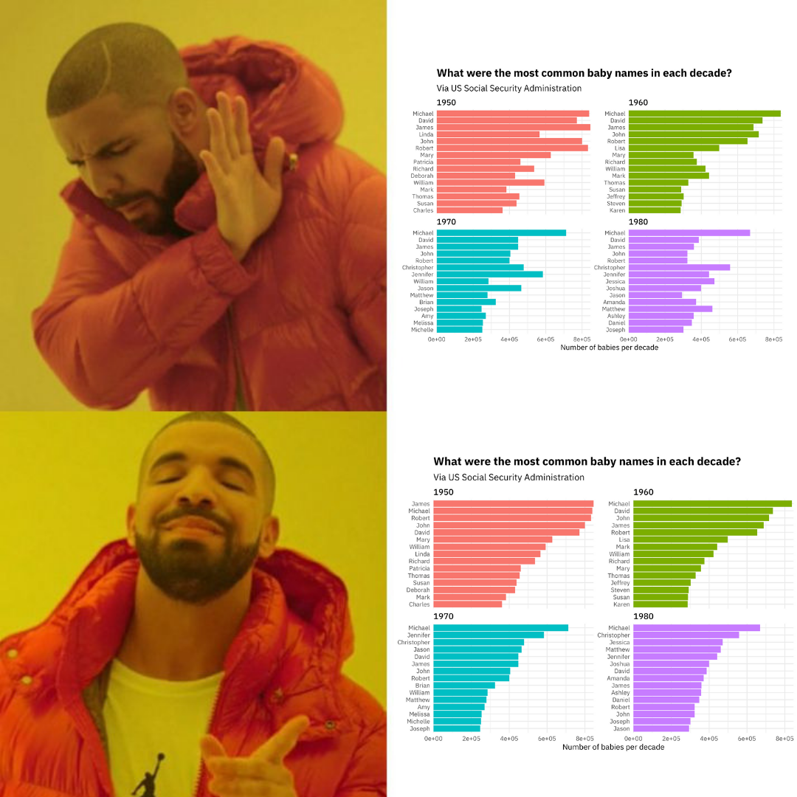
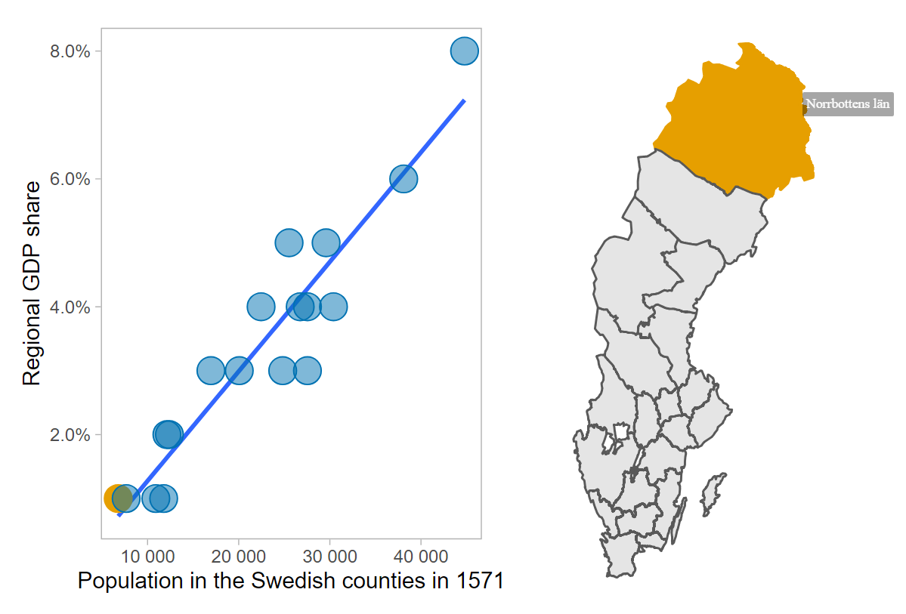
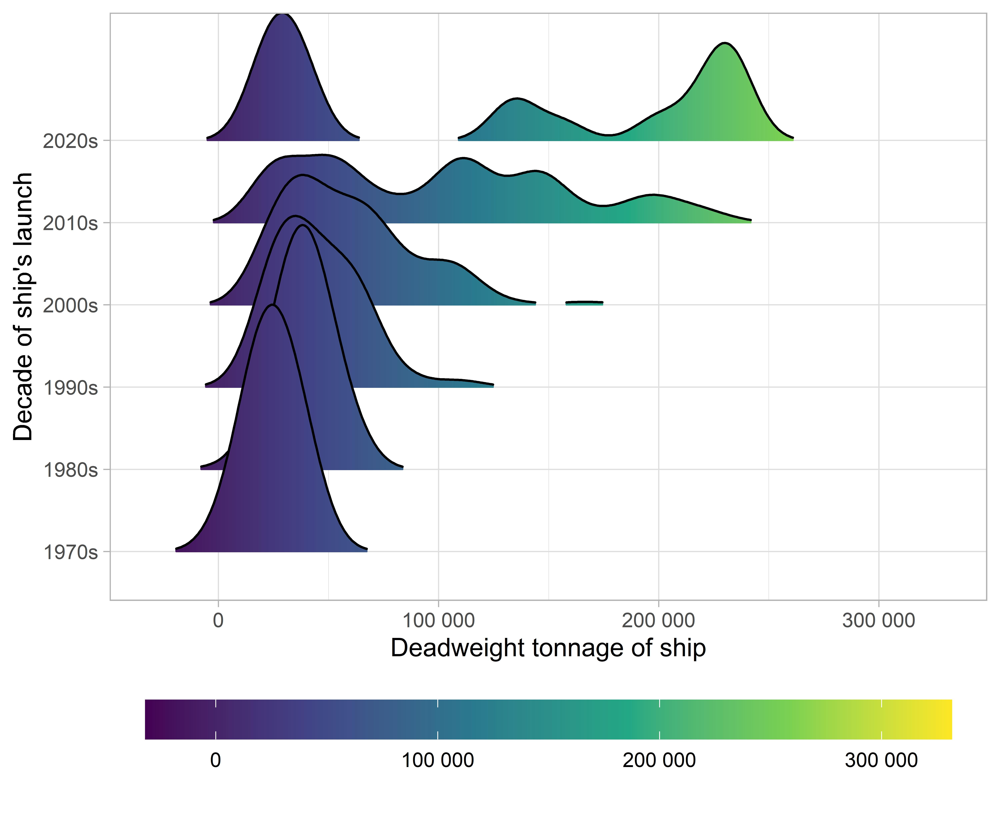
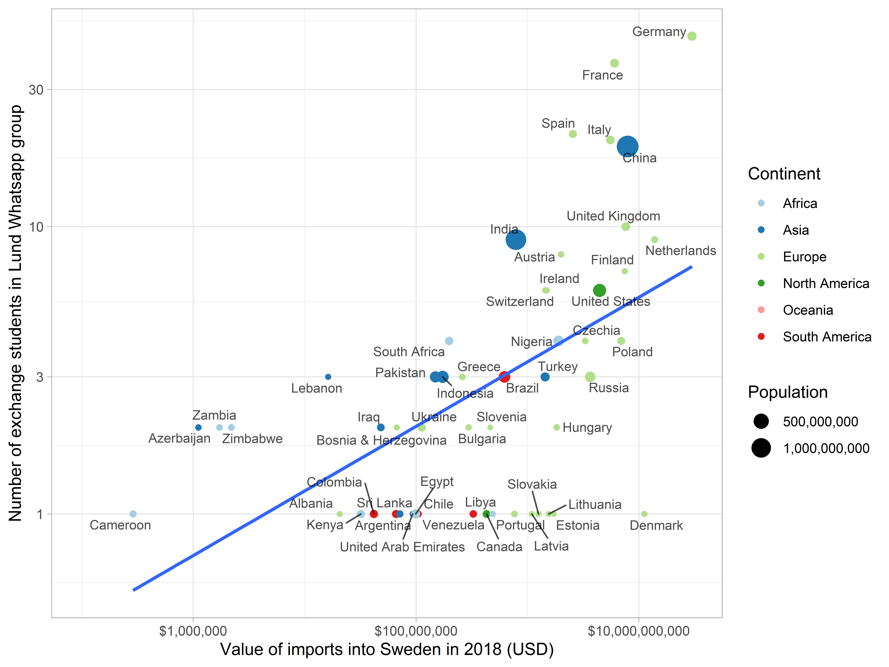
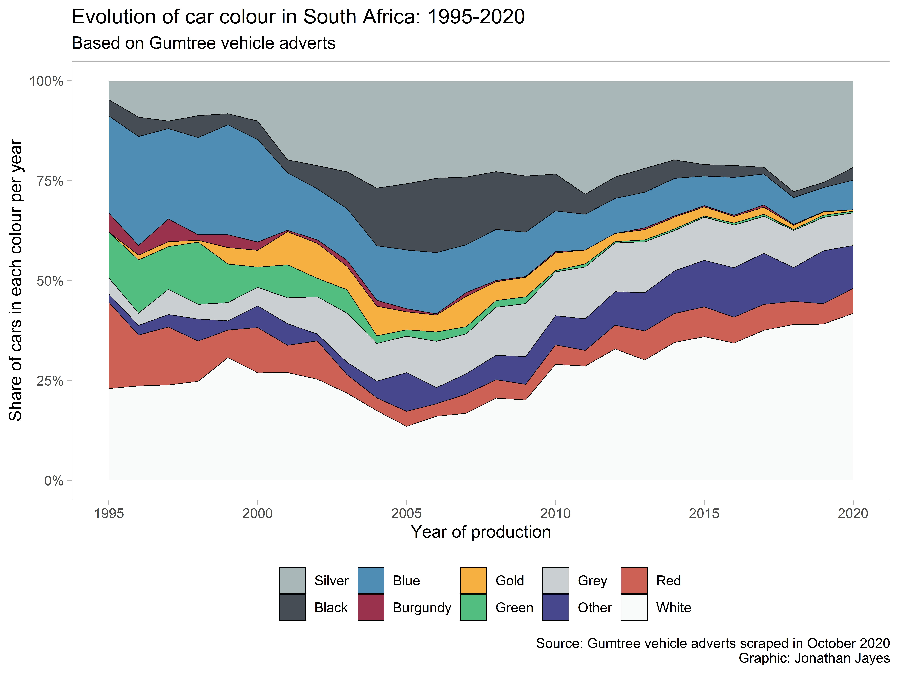
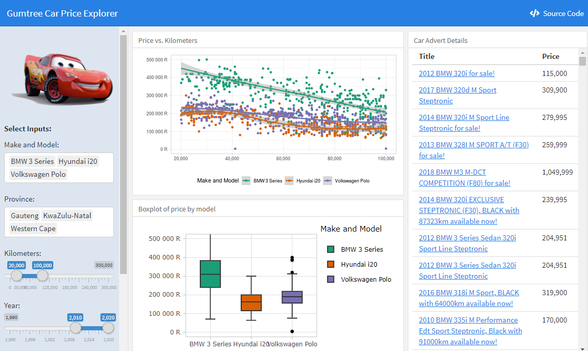
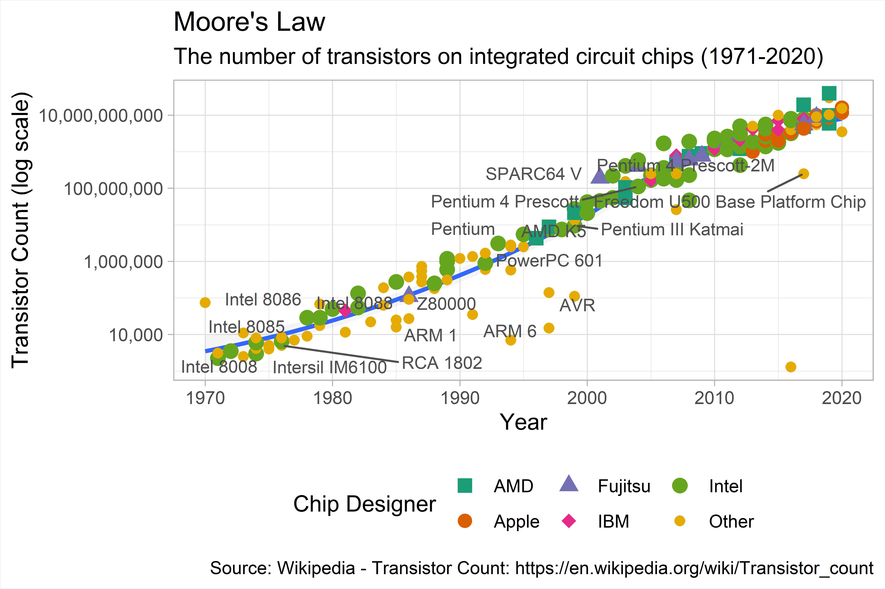

A post showing how ChatGPT can be used to create structred data from text.
A post on how to change projections for mapping and save out the new shapefiles.
A post on electricity generation per capita across the world since 2000.
A post on how recreate the Our World In Data characteristic choropleth in R.
🍲 Master the kitchen like a pro with the help of ChatGPT! 🍴 I tried it out and the results will blow your mind! 🤯 Find out what happened when I asked a language model for recipe ideas and cooking instructions. 😲 You won’t believe how delicious my Gammon and Vegetable Stew with Mint turned out! 🍽️ Don’t miss out on this must-read blog post! 👀
I ask ChatGPT to write a blog post in the same manner as one I wrote last week. The results will amaze you!
ggplot
Drawing coefficient plots in R and ggplot.
A post on how to us the {gt} table package to make tables for the about page of a pesonal website or blog.
A walk-though for writing code that writes it’s own code.

An exploration of chocolate bar reviews

Mining the twitter archive of Fathom Data
Text analysis of students’ diary entries during the Covid-19 lockdown in South Africa

A collection of videos and resources to get you started using R and the tidyverse for exploratory data analysis and visualization.

Visualizing the relationship between population and regional GDP share in 1571, based on data from Enflo and Missiaia (2018).

In this post I walk through scraping data on cargo ships from Wikipedia as part of a series on shipping. I make use of R, the rvest package for webscraping and the SelectorGadget tool for CSS selection.

I wanted to see if there was an association between the volume of trade between a country and Sweden, and the number of exchange students that have come to Lund Univesity from there, this semester.

In this document I walk through creating a stacked area chart showing the evolution of car colour over time in South Africa. The data comes from nearly 45,000 adverts for cars that I scraped from Gumtree.

This web app helps South Africans gauge the median price for a second hand car. You can compare price by odometer reading, make and model, and province. Ad links are included in a table beside the output.

Scraping data from Wikipedia and recreating OWID’s figure with ggplot2.
“Like all good fruit, the balance of life is in the ripe and ruin”